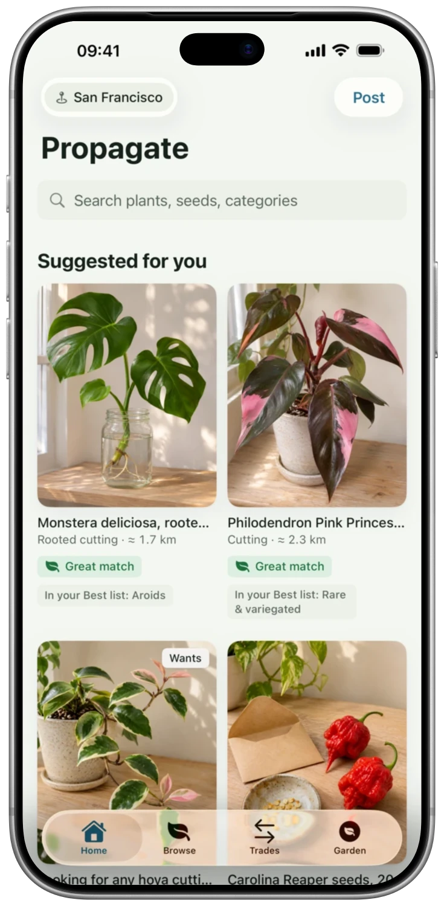

നിങ്ങൾ വളർത്തുന്നത് പങ്കുവെക്കുക
നിങ്ങൾ നൽകാൻ ആഗ്രഹിക്കുന്നതോ അല്ലെങ്കിൽ നിങ്ങൾ തിരയുന്നതോ പോസ്റ്റ് ചെയ്യുക. ചിത്രങ്ങൾ ചേർത്ത് നിങ്ങളുടെ അടുത്തുള്ള ആളുകൾക്ക് നിങ്ങൾ എന്താണ് നൽകാൻ ആഗ്രഹിക്കുന്നതെന്ന് അറിയിക്കുക.
നിങ്ങൾ പങ്കുവെക്കുമ്പോൾ നല്ല കാര്യങ്ങൾ സംഭവിക്കും.
നിങ്ങളുടെ അടുത്ത ചെടി നിങ്ങൾ ചിന്തിക്കുന്നതിലും അടുത്തായിരിക്കും.
നിങ്ങളുടെ നഗരത്തിലെ മറ്റ് ആളുകളുമായി ചെടികൾ, കമ്പുകൾ, വിത്തുകൾ എന്നിവ കൈമാറ്റം ചെയ്യുക. കുറച്ച് കുറഞ്ഞ രീതിയിൽ സാധനങ്ങൾ വാങ്ങുകയും കൂടുതൽ പങ്കുവെക്കുകയും ചെയ്യുക - അതുവഴി പുതിയ എന്തെങ്കിലും വളർത്താൻ സാധിക്കും.
സൗജന്യം · കൈമാറ്റം മാത്രം · 18 വയസ്സുCompleted and above ഉള്ളവർക്ക് മാത്രം


ആപ്പ് സ്ക്രീൻഷോട്ട്
എന്തുകൊണ്ട് ഇത് നിങ്ങൾക്ക് ഇഷ്ടപ്പെടും
നിങ്ങൾ നൽകാൻ ആഗ്രഹിക്കുന്നതോ അല്ലെങ്കിൽ നിങ്ങൾ തിരയുന്നതോ പോസ്റ്റ് ചെയ്യുക. ചിത്രങ്ങൾ ചേർത്ത് നിങ്ങളുടെ അടുത്തുള്ള ആളുകൾക്ക് നിങ്ങൾ എന്താണ് നൽകാൻ ആഗ്രഹിക്കുന്നതെന്ന് അറിയിക്കുക.
ചെടിയുടെ പേര്, ഇനം അല്ലെങ്കിൽ ദൂരം എന്നിവ അനുസരിച്ച് തിരയുക. നിങ്ങളുടെ സ്വന്തം ഒരു കമ്പിനെക്കുറിച്ച് പറയുക, ഒരു ചോദ്യം ചോദിക്കുക, തുടർന്ന് ഒരു കൈമാറ്റത്തിന് സമ്മതിക്കുക.
ഒരു പൊതുയോഗം നടത്താൻ പദ്ധതിയിടുക, കൈമാറ്റം പൂർത്തിയാക്കുക, തുടർന്ന് ഒരു അഭിപ്രായം രേഖപ്പെടുത്തുക. നിങ്ങളുടെ പ്രൊഫൈലിൽ നിങ്ങളുടെ നഗരം മാത്രമേ കാണിക്കൂ, നിങ്ങളുടെ വിലാസം കാണിക്കില്ല.
ഒന്ന് നോക്കൂ
യഥാർത്ഥ സ്ക്രീനുകൾ. ഉള്ളിലെ കാര്യങ്ങൾ കൂടുതൽ വ്യക്തമായി അറിയാൻ ഇത് സഹായിക്കും.


FAQ
നിങ്ങൾ ആരംഭിക്കുന്നതിന് മുമ്പ് ഉത്തരങ്ങൾ
ഇല്ല. Propagate കൈമാറ്റത്തിനുള്ളതാണ്. ഓരോ നിർദേശവും ഇരുകക്ഷികളും എന്ത് നൽകുന്നു എന്ന് കാണിക്കുന്നു. ആപ്പ് പണമിടപാടുകൾ കൈകാര്യം ചെയ്യുന്നില്ല.
ചെടികൾ, തണ്ടുകൾ, വിത്തുകൾ, വിഭജിച്ചെടുത്ത ചെടിഭാഗങ്ങൾ, ചെടിച്ചട്ടികൾ, മണ്ണ് തുടങ്ങിയ പൂന്തോട്ട സാമഗ്രികൾ കൈമാറാം. പോസ്റ്റ് ചെയ്യുന്നതിന് മുമ്പ് കൂട്ടായ്മയുടെ നിയമങ്ങൾ വായിക്കുക.
ഇല്ല. നിങ്ങളുടെ പ്രൊഫൈലിൽ നിങ്ങളുടെ നഗരം കാണിച്ചിരിക്കുന്നു. നിങ്ങൾ നിങ്ങളുടെ ലൊക്കേഷൻ പങ്കിടാൻ തിരഞ്ഞെടുക്കുകയാണെങ്കിൽ, അത് ഏകദേശം ഒരു കിലോമീറ്റർ പരിധിക്കുള്ളിൽ ചുരുക്കി സംരക്ഷിക്കും. പൊതു സ്ഥലങ്ങളിൽ ഒത്തുചേരൽ നടത്താൻ ക്രമീകരിക്കുക.
Propagate ഒരു പുതിയ കൂട്ടായ്മയാണ്. ലഭ്യത നിങ്ങളുടെ നഗരത്തെ ആശ്രയിച്ചിരിക്കും. കൈമാറ്റത്തിനുള്ള ആദ്യ നിർദേശമോ നിങ്ങൾ അന്വേഷിക്കുന്ന ചെടിയോ പോസ്റ്റ് ചെയ്ത് മറ്റൊരു ചെടിപ്രേമിയെ ക്ഷണിക്കൂ.
സൗജന്യം · കൈമാറ്റം മാത്രം · 18 വയസ്സുCompleted and above ഉള്ളവർക്ക് മാത്രം
18 വയസ്സും അതിൽ കൂടുതലുമുള്ള ആളുകൾക്ക് മാത്രം. പൊതു സ്ഥലത്ത് വെളിച്ചം ഉള്ള സമയത്ത് ഒത്തുചേരുക, നിങ്ങൾ എവിടെ പോകുന്നു എന്ന് ഒരു സുഹൃത്തിന് അറിയിക്കുക. ഈ കൂട്ടായ്മയുടെ ഫീച്ചറുകൾ ഉപയോഗിക്കുന്നതിന് iCloud ആവശ്യമാണ്.